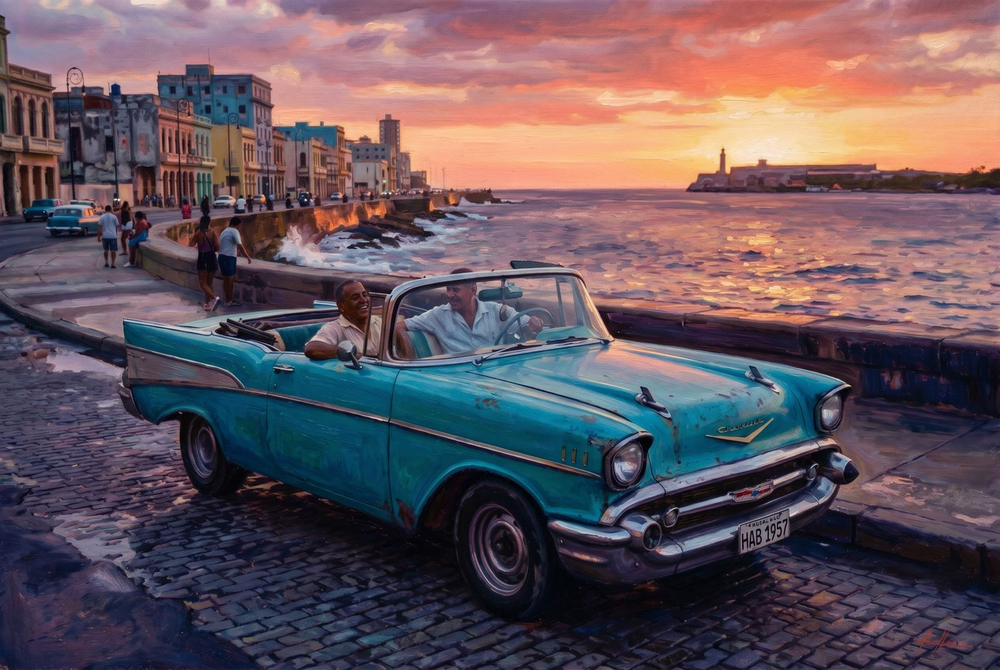
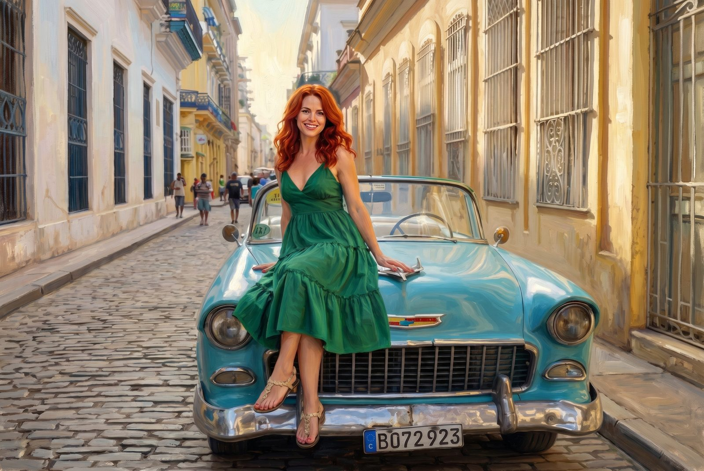
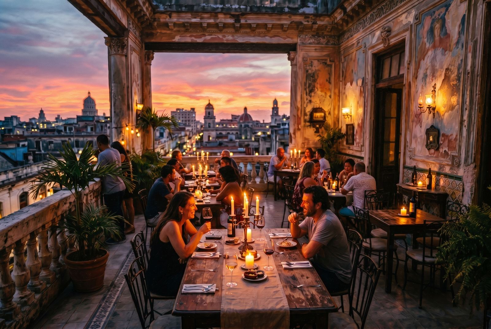
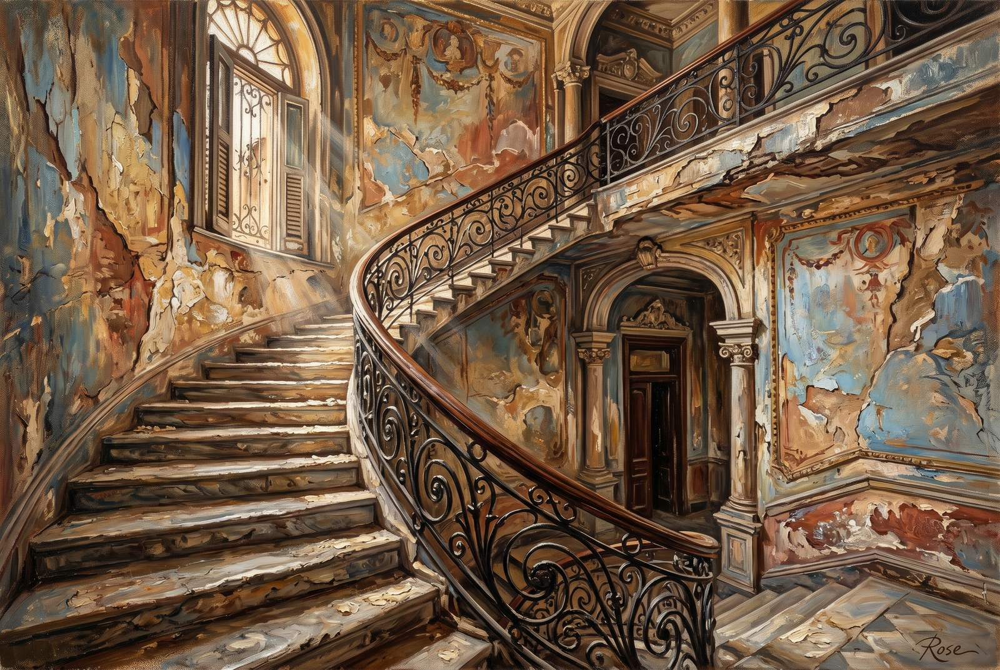
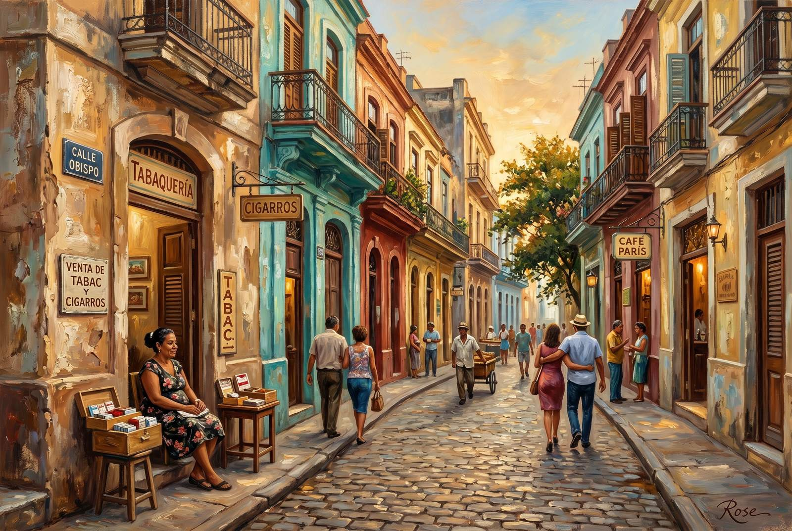
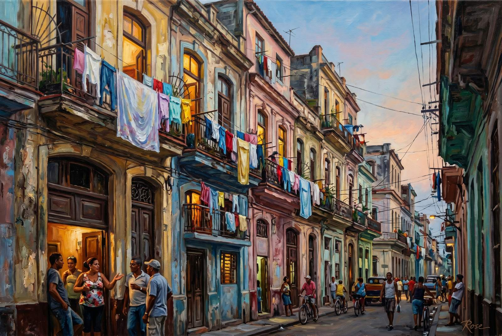
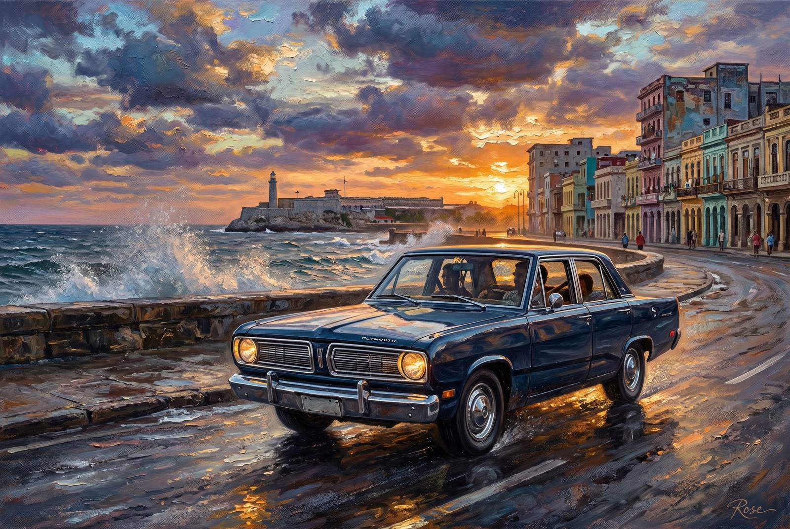
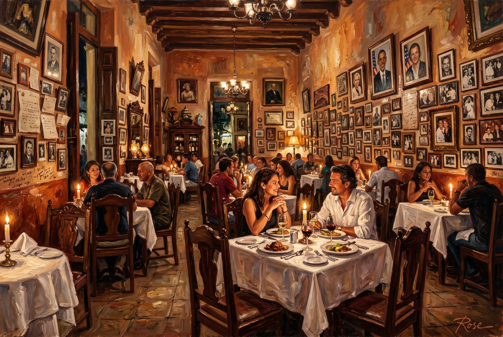
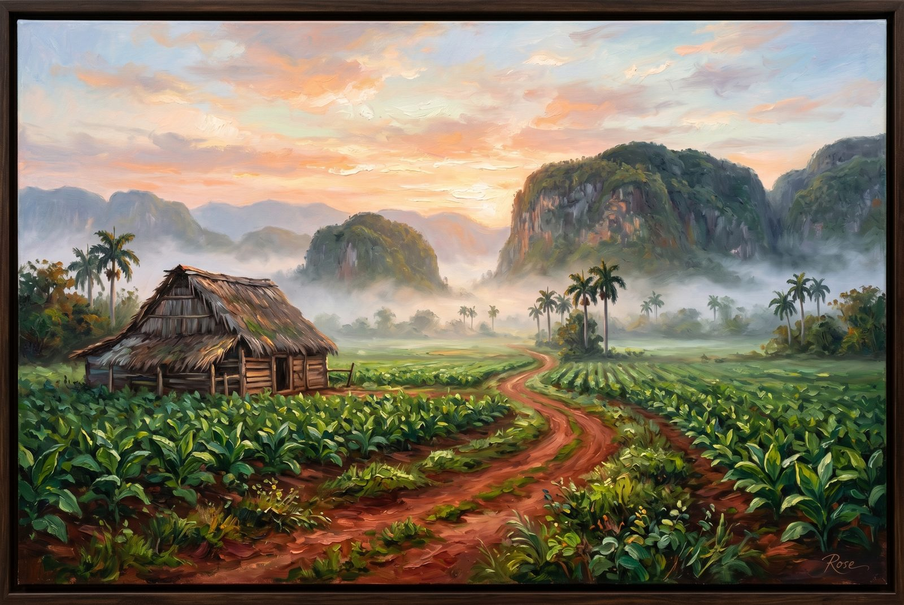

Studio File #007
These are painted versions of the Havana dispatch images: semi-realistic, brush-heavy, a little romantic, and exactly the sort of work that makes an almost-famous painter start talking about "light behavior" at dinner.
The city was already theatrical. I simply gave it canvas. The finished set now runs to ten pieces: the car, the rooftops, the staircases, the side streets, the dining rooms, and the valley detour Havana apparently needed to become a full argument.

The classic car had to go first. Havana at dusk already looks hand-painted when it wants to, so this version leans into the glowing water, the tired chrome, and the very Cuban habit of making a street corner feel like a stage set five minutes before somebody tells you a story that may or may not be true.

This one is vanity with architectural support. The narrow street, the faded walls, the absurdly cinematic turquoise car — it all deserved the full almost-famous treatment. The brushwork stays soft enough to feel painted, but the whole point is that it still looks like a real afternoon that accidentally became portraiture.

The paladar terrace became the warmest painting in the set. Candlelight, peeling walls, a skyline trying very hard to stay dramatic, and tables full of people pretending they are only there for dinner. This is the one that feels most like memory instead of documentation, which is usually how you know a painting has done its job.
Viñales widens the Havana set in exactly the right way. After all the heat, chrome, rooftops, and city improvisation, the valley arrives like a long exhale: mogotes glowing at golden hour, tobacco fields laid out with suspicious beauty, and a dirt path that looks like it has been waiting decades for somebody to over-romanticize it in oils. Which, obviously, I did.

This is the ruin-glamour piece. The staircase at La Guarida carries exactly the kind of fading authority that makes other countries spend fortunes trying to fake it. In paint, the plaster and afternoon light get to show off properly.

This one is for the Havana that keeps doing business through whatever system is currently pretending to manage it. Doorways, facades, warm stone, and a street that looks far too practiced at surviving to ever be called picturesque by accident.

Centro Habana needed to be here because the whole city gets too polished without it. Laundry, window light, weathered walls, people half-visible in doorways — the lived-in version of beauty, which is usually the better one anyway.

The Valiant deserved its own moving portrait. More chrome, more sea light, more engine noise implied through paint. The whole thing is Havana acting like transportation and confession are basically the same activity.

Yes, Obama ate here. No, that is still not the point. This painting is for the restaurant version of Havana — cluttered, intimate, over-decorated in the correct way, and lit like everybody at the table has one more story than they planned to tell.

The closing piece had to breathe. Soft valley mist, palms, red earth, and the sort of dawn that makes you briefly believe every agricultural region on earth should be painted by someone with better manners than me. A generous finish to a city-born set.